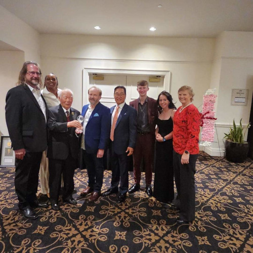
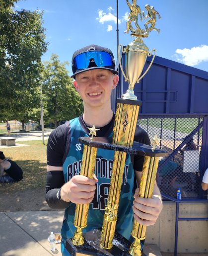

To get a little more about me, I'm currently 21 years old.
Living in Denver Colorado.
I started my schooling right as I got out of highschool in 2020, unfortantly that was during the pandemic.
It was challenging though I've continued onwards and been making great strides.
I've currently been averaging a +3.0 GPA across ACC and CSU-Pueblo.
Though Best Buy I'm reconized as a top revenue performer even though being part time.
And last May, (May, 2023) I gained my masters title in my Taekwondo studio after 16 log years.
I'm increadibly excited to see where this Cyber Security field can take me as I love technology and want to continue learning everything that I can!
 